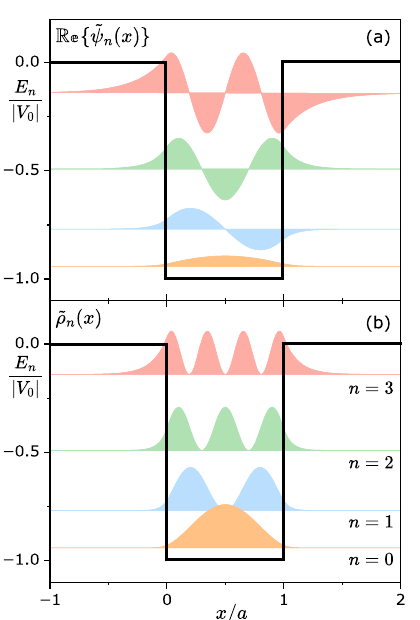

After the allowed values \(\tilde{k}_n a\) have been found, the finite-well wave functions can be written separately in regions I, II, and III. Odd \(n\) produces an odd wave function about the center of the well; even \(n\) produces an even one.
Wave functions and probability densities

Figure 4.5: real parts of the finite-well wave functions and their probability densities, aligned with the corresponding energy levels.
Penetration depth
The exponential factors are written with the penetration depth
Odd (even) \(n\) corresponds to an odd (even) wave function with respect to the center of the potential. The number of nodes is \(n\). The probability density has minima at those nodes.
In regions I and III, the exponential factors give a nonzero probability beyond the classical limits. A larger \(|E_n|\) gives a smaller \(\ell\); a smaller \(|E_n|\) gives a larger penetration depth.
What the figure shows
The figure displays oscillatory behavior in region II and exponential damping in regions I and III. It also shows the node count increasing with \(n\) and the probability density extending outside the well.
Exercise-ready boundary
This page supports exercises on finite-well wave functions, probability densities, parity, nodes, and penetration depth.
Use from this page: the regional odd/even wave functions, \(\rho_n=|\psi_n|^2\), and \(\ell\).
Keep in the book: the full determination of the coefficients and normalization.
Good exercise balance: identify the parity of \(n\) before selecting the wave function.
Practice anchors
Use these anchors to build compact exercises from the finite-well wave functions.
Focus: parity, nodes, probability density, and penetration depth.
Conceptual check: explain why the external wave functions decay without vanishing identically.
Equation: \[\ell=\frac{\hbar}{\sqrt{2m|E_n|}}\]
Equation: \[\rho_n(x)=|\psi_n(x)|^2\]
Boundary: use the displayed regional forms for setup; use the book for normalization details.
Typical task: choose the odd or even form and identify its nodes and tail.
Source note: Original auxiliary summary based on Chapter 4 of Mario Reis, Quantum Mechanics, Elsevier, 2026. Consult the original book for complete derivations and exercises.